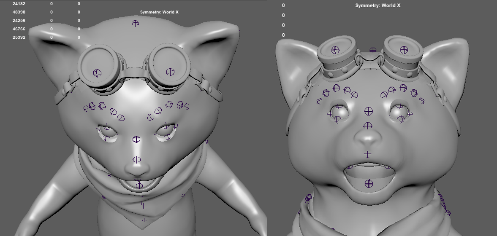

Concept and High-Poly
Throughout this document we will detail the steps to build a 3D avatar.
First step is to create a concept for your character (establish the idea, this will lead to a shorter production time and a straightforward process).
Once you have the idea of the avatar, think about its design in relation to the animations, so that you are able to create all of them, think how will the accessories/elements on the avatar move. Think about the areas that will be deformed by animations, the mechanism behind and make sure that other elements will move/rotate without clipping with other parts of the avatar.
For example, on an avatar with a cape on its shoulders, raising its arm could make the shoulder pass through its neck.
In the example below we are presenting the Fluffo avatar. We took into consideration the length of the Fluffo`s muzzle and how it will look when seen from a frontal view. Will the corners of its mouth be visible and will it look good when animated? See example in the photo below:

When you are done and happy with the concept and you envisioned the mechanics behind the animations, you can start the sculpting process.
Tip:
To avoid stretches, place the avatar in an intermediate position (ex: for polypaint), the eyes & mouth must be half-closed and the body in T pose (as the first frame in the picture above).
Naming conventions
The folder of the avatar must be in the form of: AvatarName. It should not contain spaces and/or special characters. Numbers are allowed.
e.g.: AvatarSkyler, AvatarElf47